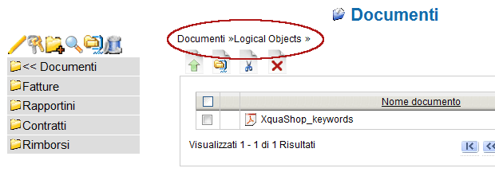
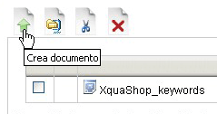
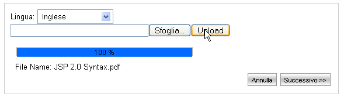
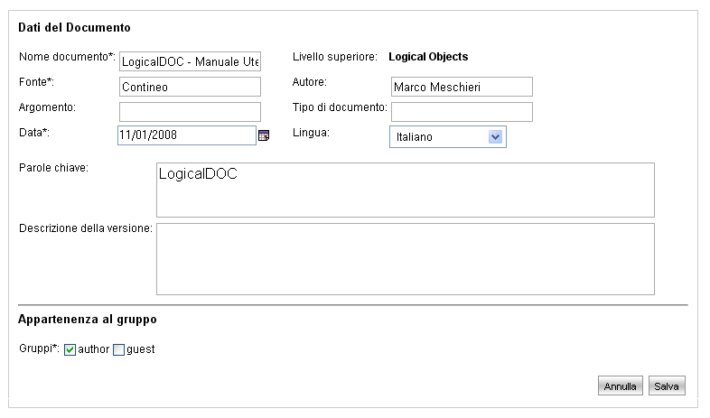

Aggiungere un Documento |
La sezione documentale è accesibile selezionando dal menù principale la voce "Documenti".
Di seguito sono descritte le fasi necessarie per aggiungere un nuovo documento.
- Selezionare la cartella di appartenenza
Navigare l'albero gerarchico del sistema presente nella parte sinistra dello schermo.
Il percorso attuale viene mostrato nella parte destra (come evidenziato in figura). La cartella selezionata è l'ultima della lista.

- Trasferire il file del documento sul sistema
Accedere alla schermata di upload nuovo documento premendo l'icona "Crea documento " e selezionare il file sul proprio Hard Disk

Selezionare la lingua del documento (questa operazione è molto importante perché determina il tipo di analizzatore di linguaggio che il sistema utilizzerà per estrarre e riconoscere il contenuto del documento e le sue parole chiave).
Attivare lo upload del documento sul sistema premendo il tasto "Upload".
Avviando tale operazione la barra di progresso sottostante mostrerà la percentuale di avanzamento dell'operazione.
Al termine della procedura di trasferimento del file premere il tasto "Successivo".
- Definire i Dati del documento
In questa schermata è possibile specificare e modificare le informazioni aggiuntive sul documento che si sta creando.
Il sistema estrapola automaticamente alcune informazioni dal file trasferito (sulla base del linguaggio selezionato) e compila automaticamente i campi Nome documento, Autore, e Parole Chiave ricavandole direttamente dal contenuto del file.
La sezione del sistema Parole Chiave mostra i documenti raggruppati per chiave.
E' possibile inoltre definire una descrizione della versione di un documento. Quando si aggiunge un documento verrà creata la versione 1.0, usando la descrizione specificata.

- Specifica impostazioni di Sicurezza sul documento
La sezione "Appartenenza al gruppo" visibile nella immagine precedente consente di definire la sicurezza sul documento.
Selezionando uno o più gruppi si assegnerà il documento ai gruppi e gli utenti di questi gruppi erediteranno automaticamente i permessi di lettura/scrittura sul documento definiti per ogni gruppo.
Per maggiori informazioni sui permessi dei gruppi si faccia riferimento alla sezione Gestione Gruppi del manuale.
- Salvataggio del documento
Premendo il tasto "Salva" nella parte in basso a destra della schermata il nuovo documento verrà creato e risulterà accessibile sia per la ricerca che per la consultazione.